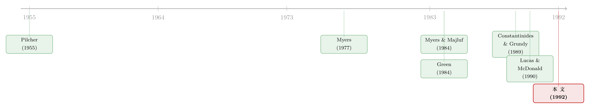

走后门的股票：可转债为什么是一种「不好意思直接增发」的融资
本文读的是 Stein (1992, Journal of Financial Economics)：当 信息不对称 (information asymmetry) 让直接增发股票变得太亏时，公司会用 可转换债券 (convertible bond) 把股票「从后门」请进自己的资本结构。模型给出的两个独门预言是——赎回条款 (call provision) 必不可少，财务困境成本 (costs of financial distress) 才是这则信号能成立的真正发动机。
1 一个旧问题：公司到底为什么要发可转债
先说一个让人有点意外的事实。按 Essig (1991) 的统计，1963–1984 年间，超过 10% 的 COMPUSTAT 公司，其可转债占总债务的比例一度超过 33%。这不是一个边角料般的小工具，而是相当一批公司的主力融资方式。
可奇怪的是，金融学界花了大量力气去给可转债定价（怎么算这张又像债、又像期权的票据值多少钱），又花了大量力气去研究公司什么时候该赎回它；唯独对一个最朴素的问题着墨不多——
公司为什么一开始要发它？
这个问题之所以难，是因为可转债天生「四不像」。你可以说它是「加了糖的债」（在普通债上挂一个转股权，好卖一点）；也可以说它是「延迟兑现的股票」（等股价涨上去，债主自己就把债换成股了）。这两种说法在直觉上都对，却都不解决问题：如果只是想发债，为什么不直接发债？如果只是想发股，为什么不直接发股？
Stein (1992) 这篇文章的全部野心，就是把这个「为什么」回答清楚。而它的答案，可以浓缩成标题里那四个字——后门股票（backdoor equity）。
2 先说清楚：可转债不是「为了对冲风险」
要理解这篇文章的位置，得先看看它不是什么。
在它之前，学界对可转债的两套主流解释，都建立在同一个观察上：可转债的价值对「标的资产的风险」相对不敏感。顺着这个观察，一个自然的故事是——
如果担心股东发债后去「赌一把」（事后 风险转移, risk-shifting），那么发一个对风险不敏感的证券，就能堵住这条路（Green, 1984）；又或者，如果一家公司的资产风险本来就难以估计，那么发一个对风险不敏感的证券，就能绕开「到底该按多高风险定价」的争吵（Brennan and Kraus, 1987；Brennan and Schwartz, 1988）。
这些故事都不能说错。但 Stein 指出，它们有一个共同的盲点：它们对「赎回条款」没什么话要说。一张可转债哪怕一直不被赎回、在外面挂很多年，它对资产风险依然相对不敏感——风险转移那套逻辑照样成立。换句话说，在这些理论里，赎回条款可有可无。
可现实里的可转债，几乎总是带赎回条款的。这就是 Stein 抓住的裂缝：一套好的可转债理论，必须把「为什么要能赎回」讲成一件至关重要的事，而不是一个可选配件。
这就是讲故事的关键张力所在：把一个别人当作「配件」的东西，放到舞台正中央。如果公司发可转债，图的就是「将来把股票请进来」，那么能不能强制转股就成了生死攸关的一步——而这正是赎回条款的全部意义。
3 识别这条逻辑的起点：Myers–Majluf 的那道老题
接着，一个自然的问题是：公司为什么不直接增发股票，非要绕这个弯？
答案藏在 Myers and Majluf (1984) 那道著名的 逆向选择 (adverse selection) 题里。经理比市场更了解公司的真实价值，于是「增发股票」本身就成了一个坏信号：愿意按当前价卖股票的，往往是那些自己觉得被高估了的公司。市场识破了这一点，于是一听到增发就压低股价，好公司因此宁可放弃好项目也不愿增发——投资被信息问题卡住了。（关于「发股票到底意味着什么」，可参见《镜子碎了：当「加杠杆」和「去杠杆」说的根本不是同一件事》与《新股增发，凭什么不一定是坏消息？》。）
Stein 的模型，本质上就是把 Myers–Majluf 这道题多加一种乐器——可转债——然后问：加了这件乐器，能不能让所有公司都老老实实投资、都不被信息问题卡住？
4 模型：三期、三型，与一道分离均衡
下面进入这篇文章的核心。我会把设定和最关键的那步证明，一步步铺开。
设定。 三个时点 0, 1, 2，贴现率为零，所有人风险中性。有三类公司——「好（good）」「中（medium）」「坏（bad）」。每类公司都面对同一个新投资机会：净现值为 N，时点 0 需要从外部筹资 I。时点 2 的总现金流要么是 \(X_H\)、要么是 \(X_L\)，且满足
$$X_H > I > X_L.$$
三类公司的唯一差别，在于拿到好结果 \(X_H\) 的概率：好公司必得 \(X_H\)；中公司以概率 \(p\) 得 \(X_H\)；坏公司以概率 \(q\) 得 \(X_H\)。其中
$$1 > p > q.$$
信息结构是这篇文章最精巧的地方。 时点 0，公司类型是私人信息。时点 1 会发生两件事：第一，类型公开（好、中、坏被揭晓）；第二，关于坏公司，还会再来一则更深层的新消息——坏公司以概率 \(z\)「恶化（deteriorate）」，其得 \(X_H\) 的概率掉到 0；以概率 \((1-z)\)「改善（improve）」，变得和中公司无异（概率升到 \(p\)）。一致性要求
$$q = (1-z)\,p.$$
直觉上：坏公司的真实价值，在时点 0 到 1 之间是会大幅波动的，而且坏公司比中公司更可能收到那则把价值砸下去的坏消息。
三种融资工具。 股权（约定分给外部投资者的时点-2 现金流比例）；到期日为时点 2 的 长期债 (long-term debt)（若时点 2 现金流低于面值，触发一笔外生的死重困境成本 \(c\)）；以及到期日同为时点 2、可在时点 1 赎回的可转债。
目标。 Stein 要证明：可转债的存在，能撑起一个所有类型都按公允价格融资、都有效投资的 分离均衡 (separating equilibrium)——而这在只有「股权 + 长期债」时一般做不到。
4.1 命题
命题。 若困境成本足够高，使得 \(c > (I - X_L)\)，则下面是一个分离均衡： （i）好公司发面值为 \(I\) 的长期债并投资； （ii）坏公司发一个比例为 \(I/(qX_H + (1-q)X_L)\) 的股权并投资； （iii）中公司发可转债并投资。其可转债面值 \(F > X_L\)，赎回价 \(K\) 满足 \(X_L < K < I\)，可转股为公司股权的一个比例 \(I/(pX_H + (1-p)X_L)\)。
要证明它，需要逐一检查三类公司「都不愿假装成别人」。而整道证明的灵魂，全在坏公司为什么不愿假装成中公司这一条上。我们就把它单独拆开。
4.2 灵魂一步：坏公司为什么不去发可转债
假设一家坏公司动了歪心思，想冒充中公司、去发那张可转债。会发生什么？
先看它要付的代价。 坏公司有概率 \(z\) 会在时点 1 恶化。一旦恶化，这张债的转股价值跌到 \(I\,X_L / (pX_H + (1-p)X_L)\)，低于赎回价 \(K\)——于是赎回条款失灵，逼不动投资者转股。结果，坏公司有概率 \(z\) 背着一张面值 \(F\) 的债走到时点 2，而恶化后的现金流 \(X_L\) 永远不够还 \(F\)，于是必然陷入财务困境。这笔「可转债悬空（convertible overhang）」带来的期望困境成本，是
$$z\,c.$$
再看它能占的便宜。 这张可转债，坏公司心里清楚：有概率 \(z\) 它将停留为一张只值 \(X_L\) 的债，有概率 \((1-z)\) 它会转成价值 \(I\) 的股权。所以它的真实价值是 \((1-z)\,I + z\,X_L\)，可坏公司却能用它筹到整整 \(I\)。于是它卖了一张被高估的票据，高估的金额是
$$z\,(I - X_L).$$
两相权衡，坏公司去冒充的条件，是占的便宜大于付的代价。 这就是整篇文章的那一道核心不等式：
两边同时除以 \(z\)，这个条件就化简成 \(I - X_L > c\)。而命题恰恰假设了 \(c > (I - X_L)\)，于是这个不等式永远不可能成立——坏公司无利可图，老老实实去发股权（它本就因此能甩掉困境成本）。分离，成立了。
请注意财务困境成本 \(c\) 在这里扮演的角色：它不是背景板，而是发动机。如果 \(c\) 更小，坏公司就真有动机去冒充中公司，整个分离均衡当场崩塌。这正是 Stein 区别于所有「风险不敏感」故事的第二个独门之处——是困境成本，而非风险对冲，决定了一则可转债公告的信息含量。
同理可证（把 \(q\) 换成 \(p\)、把恶化逻辑顺下去）：坏公司不会冒充好公司，中公司也不会冒充好公司或坏公司——核心都是同一句话，发长期债带来的期望困境成本，盖过了卖高估证券的好处。
4.3 把整条逻辑用一句话收口
于是反转出现了：中公司陷入一种两难——直接增发股票，会被市场打上坏信号而压价；直接发长期债，又要冒财务困境的风险。可转债恰好是这两难之间的一块完美中间地带：它让中公司把股票从后门请进资本结构，同时向市场传递了一个更正面的信号——
一张可转债，不可能来自坏公司。因为坏公司心里清楚，自己的股价在时点 1 未必撑得到能强制转股的高度。
这就是「后门股票」四个字的全部含义。也正因如此，赎回条款是命脉：没有它，中公司无法在时点 1 把债主「逼」成股东，整个安排就退化回了 Myers–Majluf 的死结。
4.4 一个不得不堵的漏洞：为什么不干脆「先发短债、回头再增发」
然后，一个聪明的读者立刻会反问：中公司何必这么麻烦？它大可以先发短期债，撑到时点 1 信息公开、变成对称信息之后，再不慌不忙地增发股票——这不也能分离吗？
Stein 老实承认：在基础模型里，这条「推迟增发」的路确实走得通。但这只是因为基础模型有个不自然的特征——时点 1 之后信息不对称就彻底消失了。现实显然不是这样。于是他在附录里把模型扩展了一步：让信息不对称变成稳态的——当经理时点 0 的私人信息在时点 1 公开时，经理又学到了一条新的私人信息，永远领先市场一步（这正是 Lucas and McDonald (1990) 那个无限期稳态模型的精神）。
具体地，他加了两条假设：其一，时点 1，一半中公司（记为 \(M_G\)）收到利好私人信息，得 \(X_H\) 的概率从 \(p\) 升到 \(p_G > p\)；另一半（\(M_B\)）则降到 \((2p - p_G) < p\)。其二，时点 1 可以清算部分现有资产、收回 \(I\)，但这么做净现值为负，会让公司价值减少 \(L\)。
Stein 证明：只要 \((p_G - p)\) 和 \(L\) 都足够大、而时点-0 投资的 \(N\) 足够小，「先短债、后增发」的分离均衡就不再存在。逻辑是：一个收到利好的 \(M_G\)，到时点 1 会觉得自己被低估、从而不愿按计划增发，宁可低效地清算资产去还短债。把这份事前的期望损失折回时点 0，推迟增发就被内生地排除掉了——可转债成了实现有效分离的唯一手段。
这一步看似技术，却很重要：它把「为什么非得用可转债」从一个假设，变成了一个结论。关键在于增发是「相机抉择」的——公司随时可以临阵取消一次计划中的增发；而可转债借助赎回条款，相当于一种事前的承诺。（关于「公司宁可放弃增发也不愿贱卖」这一脉，亦可参见《啄食顺序理论的滑铁卢》。）
4.5 一个诚实的自我设限
Stein 还做了一件难得的事：亲手指出自己模型的边界。他构造了一个反例——假设公司在时点 0 发一张「时点 1 可按当时股价 \(P_1\) 兑换 \(k = 1/P_1\) 股」的证券。这张证券天生防逆向选择：无论经理藏着什么信息，人人都同意它值 \$1；又因为它在时点 1 必然转股，完全没有困境成本。它比可转债更优。
这意味着，本文的理论只是故事的一部分：它解释了在「股权、长期债、可转债」这个有限菜单里，公司为什么偏爱可转债；但它没解释，为什么上面那种看起来更高效的证券，现实中很少见。Stein 顺手提了一句旁证——1991 年 5 月，通用汽车（GM）宣布发行一种叫 PERCS 的优先股，将于 1994 年 7 月按当时股价自动转为普通股，正是这类「价值对内部信息不敏感、又无困境成本」工具的现实雏形。
5 模型之外：四类经验证据
一个理论模型，最终要拿现实来照。Stein 讨论了四类证据，其中最有说服力的是经理人自己怎么说。
历次问卷调查的口径惊人地一致：Pilcher (1955) 问经理发可转债到底是为「给债加糖」还是「延迟增发股票」，82% 选了延迟增发，只有 18% 选加糖；Brigham (1966) 几乎照搬同一个问题，73% 说主要意图是获取股权融资，且这群人里 68% 相信自家股价会涨、可转债让他们能「以高于现价的价格卖股票」；Hoffmeister (1977) 把选项扩到五种，「延迟增发」依然是单一最重要动机，34% 列为首选、70% 列入前三。
换句话说，经理们口口声声说「我发可转债是为了把股票请进资本结构」——这恰恰是本文的根基。
这组问卷还顺手帮 Stein 跟一个相邻理论划清了界限。Constantinides and Grundy (1989) 也讲可转债如何化解信息不对称，但他们的机制要求可转债发行必须搭配一次公开的股票回购才能奏效。可问题是：如果经理说自己是为了「增加股权」，他怎么可能转手拿募来的钱去回购股票？Dann and Mikkelson (1984)、Eckbo (1986)、Mikkelson and Partch (1986) 翻遍发行说明书里的募资用途，没有一处提到回购——本文的「困境成本」机制因此更贴合现实。
至于另外两类证据，Stein 也点了名：可转债几乎总带赎回条款、且公司确有强制转股的行为，这与「为了延迟增发」直接吻合；而最锋利的一条可检验预言是——
一次可转债发行公告，引起的股价反应，应当不像同等规模的增发那么负面（甚至可能为正）。
因为只有相对乐观、相信股价撑得住的公司，才敢承担「万一股价跌下去、赎回失灵、徒留一身债」的风险。
6 文献脉络
把这条线索捋一捋。最上游是 Myers (1977) 关于债务积压与投资不足的洞见，和 Myers and Majluf (1984) 那道逆向选择的母题——它们奠定了「信息不对称如何扭曲融资与投资」的整个语境。与此平行的，是 Pilcher (1955)、Brigham (1966)、Hoffmeister (1977) 三代问卷，反复确认了「延迟增发」这一经理人动机。

到了 1980 年代，可转债理论分出两条岔路：一条是 Green (1984) 与 Brennan–Kraus、Brennan–Schwartz 一系，用「对资产风险不敏感」来解释可转债；另一条是 Constantinides and Grundy (1989)，用「可转债 + 回购」的组合作信号。Stein (1992) 站在第三个位置上——它继承 Myers–Majluf 的逆向选择框架，却把赎回条款和财务困境成本两件被前人忽略的事，提到了舞台中央，并借 Lucas and McDonald (1990) 的稳态信息结构，堵上了「推迟增发」这个漏洞。这，就是本文在脉络里的坐标。
7 评论与延伸（Q&A + 研究方向）
(a) 几个可能的疑问
Q：可转债和「加了糖的债」到底差在哪？模型怎么把这两者分开的？
「加糖」说认为转股权只是个让债更好卖的甜头，公司本意还是发债、并不真想让它转股。本文恰好相反：中公司真心希望它转股（借赎回条款强制转），目的就是把股票请进来。问卷里 73%–82% 的经理选「延迟增发」而非「加糖」，是站在本文这一边的直接证据。
Q：那条核心条件 \(c > (I - X_L)\) 凭什么成立？会不会只是为了让结论好看而假设的？
它确实是个假设，但有清楚的经济含义：困境成本要足够大，大到坏公司「卖高估证券占的便宜」盖不住「悬空还不上债的痛」。Stein 也坦承，更一般的做法是把困境成本内生化（比如沿 Myers (1977) 的债务积压思路），而不是外生给一个 \(c\)。这是模型的简化，也是它最容易被攻击的地方。
Q：模型说中公司能「确定地」强制转股，这是不是太理想化了？
是。Stein 自己承认这不现实。但他指出，只要放松成「中公司比坏公司更可能（而非必然）转股成功」，可转债就不再能完全消除困境成本，结论的定性部分——可转债是「高困境成本的债」与「大负面冲击的股」之间的中间地带——依然不变。
Q：和 Constantinides–Grundy (1989) 的信号模型相比，本文的预言哪里不一样？
关键差别是回购。C–G 要求可转债搭配公开回购才奏效，本文不需要、且与之相悖。经验上，发行说明书里几乎不见「募资用于回购」，且经理自述动机是「增加股权」，都更支持本文的困境成本机制。
Q：既然作者承认存在更优的「防逆选证券」（如 PERCS 那类），可转债理论还站得住吗？
站得住，但只是「半个故事」。本文解释了在常见的三件工具里为何偏爱可转债；它没有解释为什么那种理论上更优的自动转股证券现实中罕见。把后者内生化（交易成本？税收？投资者认知？监管？），是本文留下的公开问题。
Q：这则信号的可检验核心是什么？
一句话：可转债公告的股价反应应不及同等规模增发那么负面，甚至为正。这是把模型推向数据的最直接抓手，也是后续事件研究可以反复检验的命门。
(b) 几个可能的研究问题与提案
1. 可转债公告效应的「困境成本」横截面检验 - 【经济故事】本文预言：越是已经高杠杆、困境成本越高的公司，发可转债越是「相对乐观」的信号，公告股价反应应越不负面。这把 \(c\) 从抽象参数变成了可观测的横截面变量。 - 【可行性】高。用 SDC/Mergent 的可转债发行样本 + CRSP 事件研究，按发行前杠杆、利息保障倍数、行业资产专用性（困境成本代理）分组，比较 CAR。识别靠横截面异质性，数据成熟，doable。
2. 赎回失败与「可转债悬空」的真实代价 - 【经济故事】模型的发动机是「赎回失灵→悬空→困境」。现实中确有大量可转债到期仍未转股（股价没撑住）。这些公司事后是否真的承担了更高的困境成本、更差的投资？ - 【可行性】中。需要识别「本想转股却失败」的样本（可用赎回价与到期前股价对照），再追踪其后续投资、评级下调、再融资成本。难点在于把「股价没涨」与「公司本就变差」分开——可考虑用行业层面的股价冲击作工具变量。
3. 把「后门股票」搬进公司债与信用市场 - 【经济故事】可转债是「债与股之间」的中间证券；类似的逻辑能否解释可赎回 / 可回售公司债条款的选择？发行人对赎回/回售条款的取舍，是否也在传递关于困境成本与未来融资意图的信号？（与《威胁要「全赎回」，债主该不该信？》的承诺逻辑相承。） - 【可行性】中。FISD 有公司债条款的完整数据，可做条款选择的横截面与公告效应。识别难点同样是内生的发行时机，需要外生的市场窗口或评级触发事件来辅助。
4. 外资持有人与可转债信号的传导 - 【经济故事】如果可转债的「相对乐观」信号本质上依赖投资者对困境成本的认知，那么不同投资者结构（尤其信息劣势的外资持有人）下，这则信号的定价是否系统性不同？ - 【可行性】中偏低。需要发行时点的持有人结构数据（如可投资度、外资占比）与可转债公告样本匹配；样本在跨国层面较薄，识别上要小心「外资偏好」与「公司质量」的纠缠（参见《「外资偏好」是个伪命题——他们只是机构而已》）。
我的判断
这是一篇「以少胜多」的理论文章。它没有华丽的数学，三期三型一道分离均衡，却干净利落地把一个被前人当作「配件」的赎回条款，和一个被忽视的财务困境成本，提到了解释可转债存在性的中心位置。更难得的是它的自律：作者主动构造了一个比可转债更优的证券来反驳自己，诚实地把模型的边界画了出来——这种「自我设限」在理论论文里并不多见。
它的软肋也很清楚。其一，那条命脉条件 \(c > (I - X_L)\) 里的困境成本 \(c\) 是外生给的，整个分离均衡的成立与否系于这一个未被内生化的参数；一旦把 \(c\) 沿债务积压思路内生化，结论是否稳健，本文没有回答。其二，模型对「确定性强制转股」「信息在时点 1 完全/稳态揭示」这些设定的依赖较重，定性结论虽稳，定量含义则脆弱。其三，也是作者最坦诚的一点——它把融资菜单人为限定在三件工具里，于是「为什么更优的证券没人用」反而成了它打开的、却没合上的盒子。
后续我最想看到的，是把那条核心预言——可转债公告的股价反应不及同等规模增发那么负面——放到现代大样本里、按困境成本的横截面去精细检验；以及，把「困境成本驱动的信号」这套逻辑，从可转债延伸到公司债的赎回/回售条款选择上去。前者验证它的命门，后者拓展它的边疆。一篇 1992 年的小模型，三十多年后依然能生出这么多可做的题，本身就说明它抓住了某种真东西。
参考文献
- Brennan, M. and A. Kraus (1987). Efficient financing under asymmetric information. Journal of Finance 42, 1225–1243.
- Brennan, M. and E. Schwartz (1977). Convertible bonds: Valuation and optimal strategies for call and conversion. Journal of Finance 32, 1699–1715.
- Brigham, E. (1966). An analysis of convertible debentures: Theory and some empirical evidence. Journal of Finance 21, 35–54.
- Constantinides, G. and B. Grundy (1989). Optimal investment with stock repurchase and financing as signals. Review of Financial Studies 2, 445–465.
- Dann, L. and W. Mikkelson (1984). Convertible debt issuance, capital structure change and financing-related information. Journal of Financial Economics 13, 157–186.
- Green, R. (1984). Investment incentives, debt and warrants. Journal of Financial Economics 13, 115–136.
- Hoffmeister, J. R. (1977). Use of convertible debt in the early 1970s: A reevaluation of corporate motives. Quarterly Review of Economics and Business 17, 23–32.
- Lucas, D. and R. McDonald (1990). Equity issues and stock price dynamics. Journal of Finance 45, 1019–1043.
- Myers, S. (1977). Determinants of corporate borrowing. Journal of Financial Economics 5, 147–175.
- Myers, S. and N. Majluf (1984). Corporate financing and investment decisions when firms have information that investors do not have. Journal of Financial Economics 13, 187–221.
- Pilcher, C. J. (1955). Raising Capital with Convertible Securities. Michigan Business Studies No. 21.2, University of Michigan.
- Stein, J. C. (1992). Convertible bonds as backdoor equity financing. Journal of Financial Economics 32, 3–21.